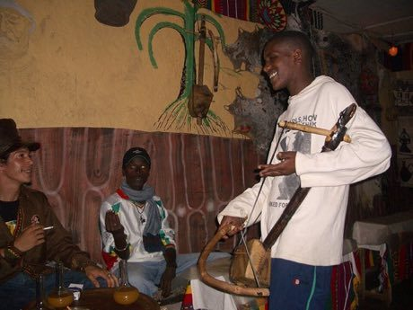

Home / Living Traditions / Africa: Nile and the Horn
Playable heritage gameMasenqo and the azmari
Also known as Masinko · masenqo · one-string fiddle
The masenqo is a one-string fiddle from Ethiopia. A diamond-shaped wooden box covered in skin carries a single string of horsehair, played with a small bow. Travelling singers called azmari use it to answer and tease their listeners with sung verses made up on the spot.



How to play
- One string runs from the head to the bridge; each lane marks a finger place on that string.
- A bead slides down toward the finger place. Bow that note just as the bead lands.
- Hold the long notes for their full tail, as the bow keeps moving on the string.
- Some tunes leave silent bars: that is where the singer answers, so listen and wait for the next bead.
Rules at a glance
- The notes come from a five-note scale: C, D, E, G and A, with the octave above.
- A stroke on the beat is perfect, a near one is good, and extra strokes cost points.
- Long notes are judged at their start only.
- Silent bars give no beads, and strokes made in them cost points.
- Every tune is played through twice.
About the tradition
For generations azmari have carried the masenqo from house to house, singing news, praise and playful teasing with the fiddle underneath. The instrument is made by hand from wood and skin, and the same craft is still practised today.
Origins
A living tradition passed from person to person; it is not tied to a single dated origin. It belongs to the cultural world of Africa: Nile and the Horn.
Credits
- Tradition: the Ethiopian masenqo and the azmari; melodies written for this game
- Photo: Flickr user meg and rahul, CC BY 2.0, source on Wikimedia Commons
- Text: CC BY-SA 4.0, World Heritage Games.
Sources

Get the app
Masenqo and the azmari is coming to the App Store and Google Play. One app, many traditions, no account needed.
Included in Lutes & Fiddles of the World
More games to play


Goje One-String Fiddle
Nigeria +1 · Musical instrumentsPlay preview · in the String Music of the World app


Hira gasy village troupe contest
Madagascar · Performance and storytellingPlay preview · in the Story & Theatre of the World app
More from Ethiopia

Dorze cotton weaving
Ethiopia · Crafts and making

Jebena coffee brewing
Ethiopia +1 · Crafts and making


Senterej
Ethiopia +1 · Board and table games